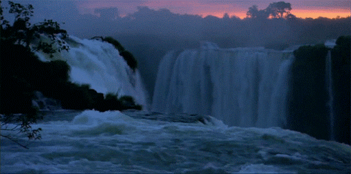
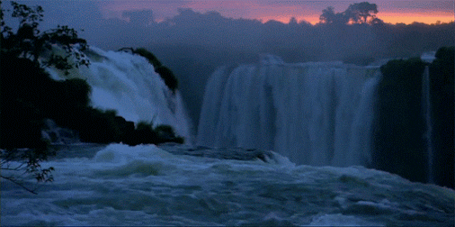

휴식이 간절하게 필요할 때,
자신감이 떨어질 때,
그리고 낯선 곳으로 훌쩍 떠나고 싶을 때에도, 책상에 앉아 모니터만 바라봐야 하나요?

답답한 현실에서
지금 당장 벗어나고 싶을 때,
DIGITAL(TELEPORTATION) 을 이용해보세요. DIGITAL(TELEPORTATION)은,
원하는 상황에 즉시 들어가게 만들어주는 디지털 텔레포트 서비스입니다. 텔레포트 하고싶은 상황의 분위기와 목적,
미정을 선택하면, 그에 적합한 상황을 준비해드립니다. 눈 깜짝할 새 원하는 상황에 들어와 있는 자신을 발견할 수 있습니다.
소리를 켜고 잠시 현실에서 떠나 새로운 상황에 집중해보세요.
고객의 니즈를 만족시킬 수 있는 다양한 상황의 옵션을 제공합니다.
원하는 상황을 클릭해 무료로 체험해보세요.
 

쏟아지는 박수갈채의 주인공
01
02
03
작업을 하다가 자신감이 떨어질 때, 새로운 도전에 대한 응원이 필요할 때 이
곳으로 텔레포트 해보세요.
커다란 박수소리와 함께 쏟아지는 박수갈채의 중심에서, 자신감을 회복하고 활기찬 응원의 힘을 얻을 수 있습니다.
커다란 박수소리와 함께 쏟아지는 박수갈채의 중심에서, 자신감을 회복하고 활기찬 응원의 힘을 얻을 수 있습니다.
자신감 회복
활기찬
긴장 해소
미정
평화로운
명상과 바른 호흡은 많은 도움을 줍니다. 자극적인 콘텐츠를 시청하며
휴식하기보다, 깊은 호흡을 통해 잠시 몸과 마음을 내려놓아 보세요.
흐르는 폭포와 새소리, 평화로운 자연의 모습은 깊고 편안한 명상을 가능하게 합니다.
흐르는 폭포와 새소리, 평화로운 자연의 모습은 깊고 편안한 명상을 가능하게 합니다.
해방
미정
아찔한
해방감을 원하시는 분은 오토바이를 타고 전력질주를 하는 상황으로 떠나보세요.
현실에서는 불가능한 상황도
디지털 텔레포터를 통해서는 가능합니다. 폭발하는 엔진소리를 배경음 삼아 아찔한 질주에 몰입해보세요.
디지털 텔레포터를 통해서는 가능합니다. 폭발하는 엔진소리를 배경음 삼아 아찔한 질주에 몰입해보세요.
자연 속에서 명상하기

오토바이를 타고 전력질주
미정